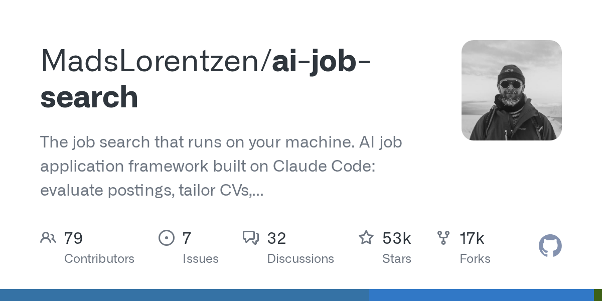
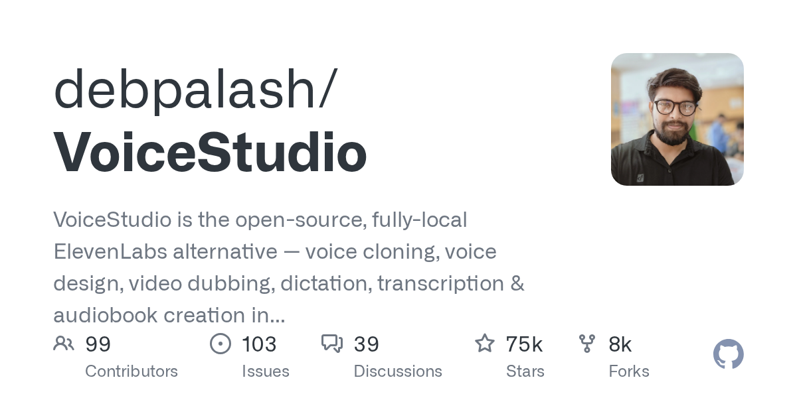
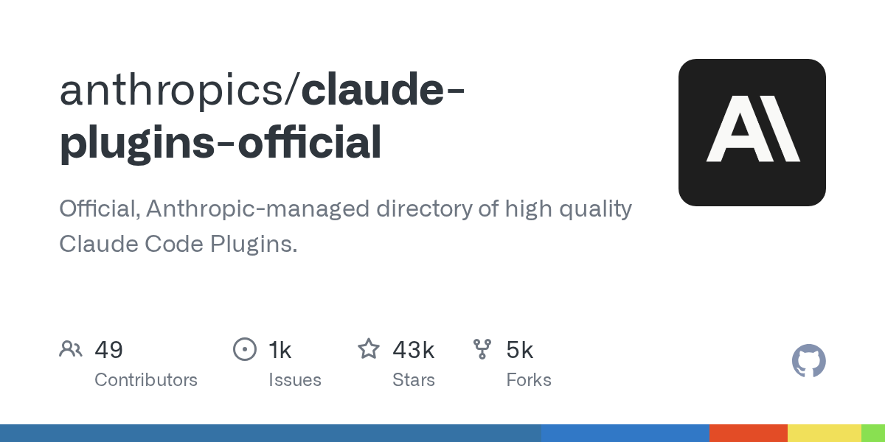
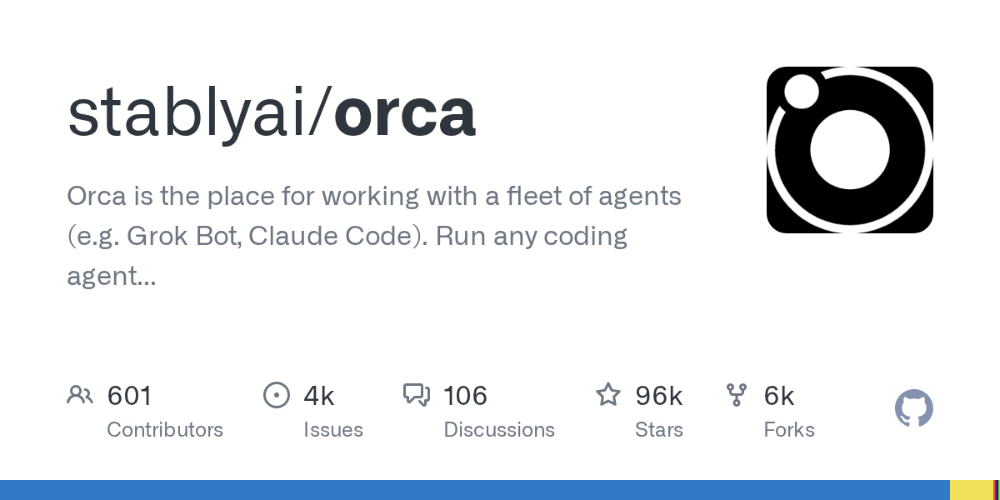
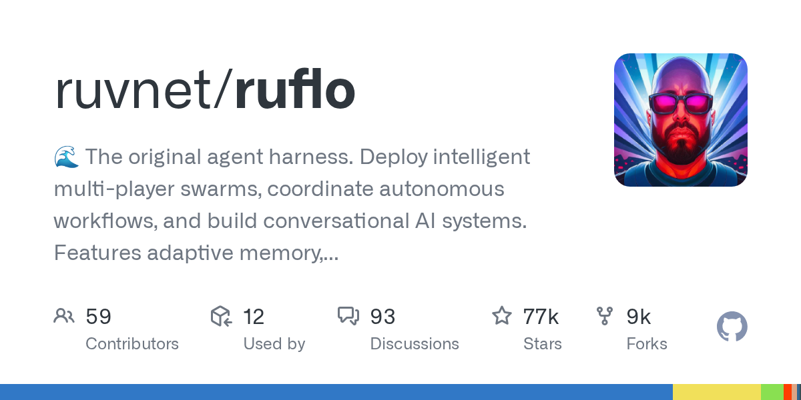
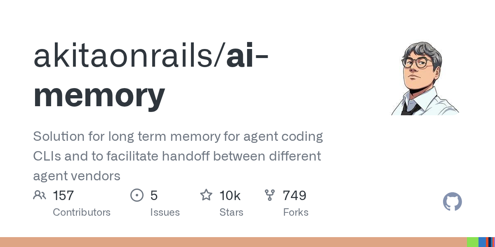
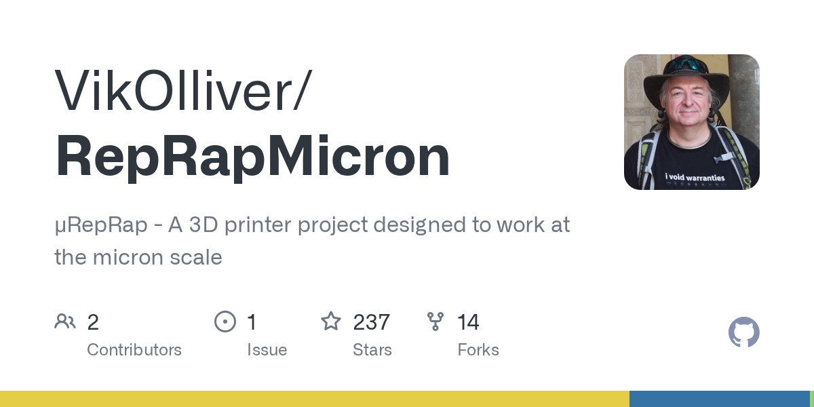

科技日报 | 2026-10-19
2026 年 10 月 19 日 周日 · GitHub Trending + Hacker News
今日关键词：Agent 舰队、平台信任、理解的成本。
GitHub 上，"同时管理一堆 Agent"成了新赛道；HN 上，Meta 一天之内因为两件事上了榜，而一个 Git hook 提出了一个尖锐的问题：代码是 AI 写的，你真的看懂了吗？
一、GitHub Trending 今日热门 TOP 10
数据截至 2026-10-19，按"今日新增 Star"排序。
1. MadsLorentzen/ai-job-search —— 跑在自己电脑上的求职 Agent

🏷️ 基本信息
- 语言：Python
- 总 Star：53,162
- 今日新增：+2,232（今日第一）
- 地址：https://github.com/MadsLorentzen/ai-job-search
📖 项目介绍
基于 Claude Code 的本地求职框架：评估职位、定制简历、写求职信、准备面试，全流程在自己的机器上完成，可 fork 后长期维护。
✨ 技术亮点
- 隐私优先：简历与求职记录不上传第三方；
- 把求职拆成可复用的流水线，而不是每次重新对话；
- 开源可改造，适合个人按自己的行业调整。
🎯 适合场景
个人求职、职业转型、猎头初筛辅助。
📚 学习价值
它展示了一个正在成型的品类："个人 Agent"——不追求通用，只把一个高频、长周期、信息密集的流程做深。
2. debpalash/VoiceStudio —— 本地版 ElevenLabs

🏷️ 基本信息
- 语言：Python
- 总 Star：75,350
- 今日新增：+2,082
- 地址：https://github.com/debpalash/VoiceStudio
📖 项目介绍
完全本地运行的语音工作台：声音克隆、音色设计、视频配音、听写、转写、有声书制作，覆盖 646 种语言。
✨ 技术亮点
- 全流程本地化，声音数据不出本机；
- 一个项目覆盖"克隆 → 合成 → 配音 → 转写"整条链；
- 语言覆盖面在开源语音项目里属于第一梯队。
🎯 适合场景
播客与短视频配音、有声书生产、企业内部培训、合规敏感的语音产品。
📚 学习价值
想理解语音克隆产品由哪些模块组成，这个仓库是一张完整的工程地图。
3. anomalyco/opencode —— 开源编码 Agent

🏷️ 基本信息
- 语言：TypeScript
- 总 Star：216,581
- 今日新增：+1,414
- 地址：https://github.com/anomalyco/opencode
📖 项目介绍
开源编码 Agent，定位是"能直接干活的编程助手"，与闭源编码工具形成正面竞争。
✨ 技术亮点
- 开源可审计，适合对数据流向敏感的团队；
- 终端优先，容易接入现有开发流程；
- 社区驱动，迭代速度快。
🎯 适合场景
希望自托管编码 Agent 的团队、需要审计工具行为的场景。
📚 学习价值
它是观察"编码 Agent 内部如何组织工具调用、上下文与权限"的绝佳样本。
4. anthropics/claude-plugins-official —— Claude Code 官方插件目录

🏷️ 基本信息
- 语言：Python
- 总 Star：42,685
- 今日新增：+1,175
- 地址：https://github.com/anthropics/claude-plugins-official
📖 项目介绍
Anthropic 官方维护的高质量 Claude Code 插件目录。
✨ 技术亮点
- 官方筛选，降低装到恶意插件的风险；
- 目录化组织，插件发现成本大幅下降；
- 标志着 Claude Code 从工具走向平台。
🎯 适合场景
团队统一 Claude Code 工具链、评估插件、搭建内部工作流。
📚 学习价值
官方插件目录是观察平台边界的最佳样本：哪些能力交给插件，哪些留在核心。
5. stablyai/orca —— 管理"Agent 舰队"的工作台

🏷️ 基本信息
- 语言：TypeScript
- 总 Star：96,634
- 今日新增：+1,146
- 地址：https://github.com/stablyai/orca
📖 项目介绍
面向"一群 Agent"的工作台：可以同时运行 Grok Bot、Claude Code 等编码 Agent，使用你自己的订阅，支持桌面端、移动端与远程运行时。
✨ 技术亮点
- 多 Agent 并行管理，而不是一次只开一个窗口；
- 支持 worktree、终端与远程运行时；
- "用自己的订阅"——绕开按 token 计费的 API 成本。
🎯 适合场景
同时维护多个任务/多个仓库的开发者、需要远程跑长任务的团队。
📚 学习价值
它把一个问题摆上台面：当 Agent 数量超过人，管理界面就成了新的瓶颈。
6. HKUDS/CLI-Anything —— 让所有软件都"Agent 原生"

🏷️ 基本信息
- 语言：Python
- 总 Star：54,594
- 今日新增：+589
- 地址：https://github.com/HKUDS/CLI-Anything
📖 项目介绍
目标很激进：把任何软件都变成 Agent 可以直接调用的形态，配套 CLI-Hub 做分发。
✨ 技术亮点
- 用统一 CLI 抽象抹平软件差异；
- 让 Agent 不必为每个软件单独写适配器；
- 港大数据智能实验室出品，工程完成度较高。
🎯 适合场景
企业内部工具接入 Agent、遗留系统自动化。
📚 学习价值
它代表了"Agent 时代的驱动程序层"这个思路：先把软件变成可调用接口，再谈智能。
7. ruvnet/ruflo —— 多智能体编排框架

🏷️ 基本信息
- 语言：TypeScript
- 总 Star：76,516
- 今日新增：+513
- 地址：https://github.com/ruvnet/ruflo
📖 项目介绍
多智能体编排框架：蜂群协作、自主工作流、自适应记忆、自学习、联邦协作与向量 RAG。
✨ 技术亮点
- 多 Agent 任务分派与协同；
- 长期运行所需的记忆与状态管理；
- 对接多种 Agent 运行时。
🎯 适合场景
复杂任务拆解、多角色协作、长期运行的 Agent 系统。
📚 学习价值
多 Agent 的关键不是"热闹"，而是任务归属、失败重试与状态一致性。
8. akitaonrails/ai-memory —— 跨 Agent 的长期记忆

🏷️ 基本信息
- 语言：Rust
- 总 Star：10,481
- 今日新增：+512
- 地址：https://github.com/akitaonrails/ai-memory
📖 项目介绍
给编码 Agent 用的长期记忆：任务做到一半退出 Claude Code，在同一个目录里启动 Codex，可以接着干，不用重新解释架构、失败的尝试和未决问题。
✨ 技术亮点
- 记忆与工具解耦，跨厂商 Agent 可交接；
- Rust 实现，性能与部署成本友好；
- 解决"换一个 Agent 就得从头讲一遍"的真实痛点。
🎯 适合场景
多 Agent 混用、长任务中断续做、团队知识交接。
📚 学习价值
它触及了 Agent 工程的核心矛盾：上下文是临时的，但工作不是。
9. android/skills —— Android 官方 Agent Skills

🏷️ 基本信息
- 语言：Kotlin
- 总 Star：8,770
- 今日新增：+375
- 地址：https://github.com/android/skills
📖 项目介绍
Google 官方推出的 Android 开发技能库：一组面向 AI 优化的模块化指令，遵循开放的 Agent Skills 标准（SKILL.md），把 Android 官方最佳实践注入 Agent。
✨ 技术亮点
- 明确聚焦"评测显示 LLM 表现不佳的场景"，而不是重复模型已会的常识；
- 遵循开放标准，可跨 Agent 复用；
- 官方维护，权威性高。
🎯 适合场景
Android 应用开发、代码审查、迁移与最佳实践检查。
📚 学习价值
这是"厂商亲自下场写 Skills"的信号：领域知识正在成为 Agent 能力的一部分。
10. cursor/plugins —— Cursor 官方插件规范

🏷️ 基本信息
- 语言：TypeScript
- 总 Star：12,741
- 今日新增：+350
- 地址：https://github.com/cursor/plugins
📖 项目介绍
Cursor 的插件规范与官方插件集合。
✨ 技术亮点
- 规范先行，第三方可按标准扩展；
- 与 Claude Code 插件生态形成对照；
- 编辑器正在变成 Agent 的宿主。
🎯 适合场景
为 Cursor 开发扩展、统一团队插件配置。
📚 学习价值
对比 Claude Code 与 Cursor 的插件设计，能看出两种平台哲学：一个是 Agent 为中心，一个是编辑器为中心。
二、Hacker News 今日热榜 TOP 10
1️⃣ Meta 在抗议日下架 "No Kings" Instagram 账号
据活动组织 Indivisible 的说法，在全美"No Kings"抗议日当天，Meta 在没有预警、没有说明理由的情况下停用了该运动的主 Instagram 账号，在引发强烈反弹后约 90 分钟恢复。
HN 讨论的焦点不是这一次下架，而是平台权力的边界：
- 一个拥有数亿用户的平台，可以在几分钟内让一个政治组织的发声渠道消失；
- 恢复得也很快，但"先封后解"造成的传播损失已经发生；
- 评论区反复出现的一句话是："互联网会绕开损伤"——但绕开的代价由谁承担？
怎么看：这类事件一次次提醒我们，平台不是中立的管道。对依赖单一平台的组织而言，多平台备份不是可选项。
2. DeepSeek 把搜索和抓取做成了 API，价格很激进
DeepSeek 正式开放 Search 与 Fetch 两个接口：
- Search：用自研搜索引擎检索网页，返回结构化结果；
- Fetch：抓取单个网页，直接返回 Markdown；
- 两个都是原始 JSON API，复用 DeepSeek 的 Bearer 鉴权；
- 定价：每 1000 次成功请求 0.75 美元。
对 RAG 与 Agent 开发者来说，这解决了一个很烦的问题：过去要自己拼搜索引擎、爬虫、正文抽取、清洗，现在一个接口拿到干净的 Markdown。
注意点：
- "成功请求"才计费，失败不收费，这对不稳定站点友好；
- 但抓取行为要遵守目标站点的条款与 robots 协议；
- 数据新鲜度与覆盖面仍需按自己的业务验证。
趋势判断：搜索正在从"产品"变成"基础设施"。当搜索 API 便宜到按千次计费，Agent 的实时信息能力会被重新定义。
3. Namecheap 被指"没收"用户全部域名
一位用户在 r/sysadmin 发帖称，Namecheap 突然扣押并停用了他名下的所有域名。帖子迅速冲上 HN 前列，评论区大量用户分享了类似经历：
- 有人称因未在 48 小时内回复一封钓鱼邮件，整家公司的业务域名被关闭；
- 有人称购买域名后价格被单方面改成 1500 美元的"溢价域名"；
- 也有人提到 Namecheap 在 2025 年被私募股权以 15 亿美元收购，此后支持质量下降、价格多次上调。
这些说法来自用户与评论者，尚未看到 Namecheap 的完整回应，但讨论本身已经说明问题：域名是业务的单点依赖。
给企业的提醒：
1. 域名注册商要选有明确 SLA 与人工支持的；
2. 开启注册商锁定与双因素认证；
3. 关键域名分散在不同注册商，避免一锅端；
4. 保留所有购买凭证与续费记录。
4. 一部关于 Theranos 的纪录片，被指"在骗观众"
《You Can See Everything》上线后，一篇评论文章提出了尖锐批评：纪录片通过剪辑与叙事结构，让观众对 Elizabeth Holmes 产生不应有的同情，并淡化了关键事实。
文章特别指出一个常被忽略的细节：Holmes 在四项与患者欺诈相关的指控上被判无罪，她入狱是因为陪审团认定她明知故犯地误导了投资人。
HN 的讨论分成两派：
- 一派认为文章本身也在"过度解读"，纪录片只是呈现视角，不等于洗白；
- 另一派认为，纪录片的形式天然带有引导性，观众需要意识到"镜头也是一种论证"。
为什么值得看：这是一个关于叙事如何塑造判断的案例。它和今天另一条新闻形成了奇妙呼应——AI 生成的代码、AI 写的文章，同样需要有人追问："这个结论是怎么被组织出来的？"
5. RepRapMicron：在家打印"微米级"结构

RepRap 是一个著名的开源 3D 打印机项目，而 RepRapMicron 把目标推进到了微米尺度：用尽可能多的现成零件，做出亚微米级定位精度的运动平台与打印机构。
HN 评论区的反应很真实：
- "太不可思议了，这种公差居然用现成零件做到了"；
- "这意味着新一轮微型制造的可能性"；
- 也有人泼冷水："先告诉我能打印什么有用的东西"。
技术意义：微米级 3D 打印过去是实验室设备，价格以万美元计。开源方案把它拉到创客可尝试的范围，这是"制造民主化"的又一步。
6. "软件背后应该有人"

Linear 联合创始人 Karri Saarinen 写了一篇很短但很有分量的文章：好产品会带着制作者的东西——他们的经历、在意的事、对"应该怎样"的判断。
他反对把软件开发类比成工厂流水线："收集需求、实现功能、度量结果，跟着流程走就会有好结果。"现实是，两个团队面对同样的客户、同样的技术，会做出完全不同的东西。差别来自理解方式与品味。
文章里有一句话值得抄下来：
直觉不是拍脑袋，而是经验、观察与犯错之后形成的判断力。
和 AI 的关系：当 Agent 能写越来越多的代码，"流程"会越来越便宜，"判断"会越来越贵。这也解释了今天 Sphinx 那条为什么能上榜。
7. Sphinx：上线前，先考考你到底懂不懂 AI 写的代码
一个叫 Sphinx 的 Git hook 做了件很有意思的事：
- 当你的 Agent 准备 push 代码时，钩子会拦下来；
- 它让一个没看过你聊天记录的审查者读 diff，然后向你提问；
- 问题围绕"出错时会怎样"：重试会不会重复扣款？失败后数据会不会丢？
- 你答对了，才允许推送。
它引用了一句（署名为孙子的）话："你可以外包思考，但不能外包理解。"
HN 评论两极分化：
- 支持者：这正是 AI 编码时代最缺的一环——人要对结果负责；
- 反对者：真正关心的人不需要它，不关心的人会直接绕过它；而且"考试"容易变成新的形式主义。
我的看法：工具本身未必能解决"理解"问题，但它提出了正确的问题。代码可以由 AI 写，责任不能由 AI 承担。
8. macOS 15.8.2 被指破坏 OpenGL
Apple 开发者论坛上出现大量报告：升级到 macOS 15.8.2 后，部分依赖 OpenGL 的应用出现异常。HN 讨论迅速升温（243 条评论）。
几个值得注意的点：
- 有评论指出，15.8.1 才是当时的正式版本，15.8.2 按理只应包含安全修复；
- 开发者抱怨 Apple 的回应是"请继续帮我们复现"，而不是给出时间表；
- 也有人提出务实的出路：用 AI 辅助把老代码迁移到 Metal/Vulkan，"修遗留代码只要 25 美元的 token"。
更大的背景：OpenGL 在 macOS 上早已被标记为弃用，但大量工业软件、游戏与科研工具仍在依赖它。弃用不等于消失，兼容性债务总有人要还。
9. Parser Combinators：比正则更好用的解析方式
一篇教程从零开始讲 parser combinator：
1. 先写一个"部分解析器"；
2. 用组合子把它们串起来（pSeq、pMap、pRepeat）；
3. 处理元组、头部、数据包与统计信息；
4. 最后真的解析出 Ping 包。
它的核心思想是：把语法拆成小块，每块都是一个函数，再用高阶函数组合。相比正则，它更容易测试、更容易报错、也更容易扩展。
适合谁：写过复杂正则、被回溯和分组折磨过的人。这篇文章的渐进式结构，比大多数教科书都友好。
10. 法律专家：Meta 的新条款仍允许大规模抓取
Nieman Lab 报道称，法律专家警告 Meta 修改后的服务条款仍然授予其广泛的抓取权限。
HN 评论区的讨论很技术，也很现实：
- "别依赖 robots.txt，配置它，但别指望它"；
- "按 User-Agent 拦截已经没用了，Meta 的爬虫会轮换 UA，还会从非 Meta 的 ASN 发出请求"；
- 有效做法是按 ASN + TLS 指纹（JA4）做识别与阻断。
背后是一个结构性矛盾：平台一边抓取全网内容训练模型，一边阻止别人抓取自己。对内容站来说，技术防护与法律条款必须同时准备。
三、今日趋势观察
1. Agent 从"单兵"进入"舰队"时代
今天的 GitHub 榜单几乎是一张"Agent 运维图"：
- 调度：orca 管理一群 Agent；
- 执行：opencode 提供开源编码能力；
- 扩展：Claude Code 与 Cursor 的插件体系；
- 知识：Android 官方 Skills 把领域最佳实践注入；
- 记忆：ai-memory 让不同厂商的 Agent 可以交接。
竞争焦点已经从"哪个模型更聪明"，转向"怎么把一堆 Agent 管好"。
2. 平台信任正在变成显性成本
Meta 因账号下架与抓取条款两次上榜，Namecheap 因域名问题冲上第三。三件事指向同一个结论：把业务完全托付给单一平台，风险正在变高。
可操作的应对：多平台备份、关键资产分散、保留凭证、准备迁移方案。
3. 搜索 API 化，Agent 的"实时能力"被重新定价
DeepSeek 把搜索与抓取打包成按千次计费的 API，且抓取直接返回 Markdown。这意味着 RAG 的工程门槛进一步下降，"能不能拿到干净、实时的网页内容"不再是核心竞争力，如何组织与验证信息才是。
4. "理解"成为 AI 时代最稀缺的资源
Sphinx 考你懂不懂 AI 写的代码；Karri Saarinen 说产品背后要有人；parser combinator 教程强调"想清楚语法结构"；macOS OpenGL 的讨论则说"迁移遗留代码很容易，难的是判断该不该迁"。
四条新闻，同一个主题：生成越来越便宜，理解越来越贵。
数据来源
- GitHub Trending：https://github.com/trending?since=daily（2026-10-19 抓取）
- Hacker News：hn.algolia.com 24 小时热门，按 points 排序并去重
- 图片：GitHub OpenGraph 卡片 + 各站点 og:image
日报由自动化管线生成，数据以原始链接为准。